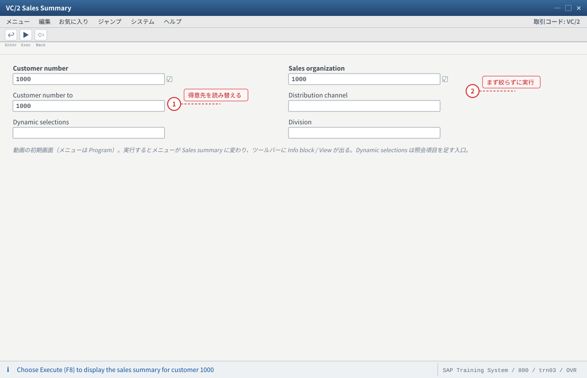
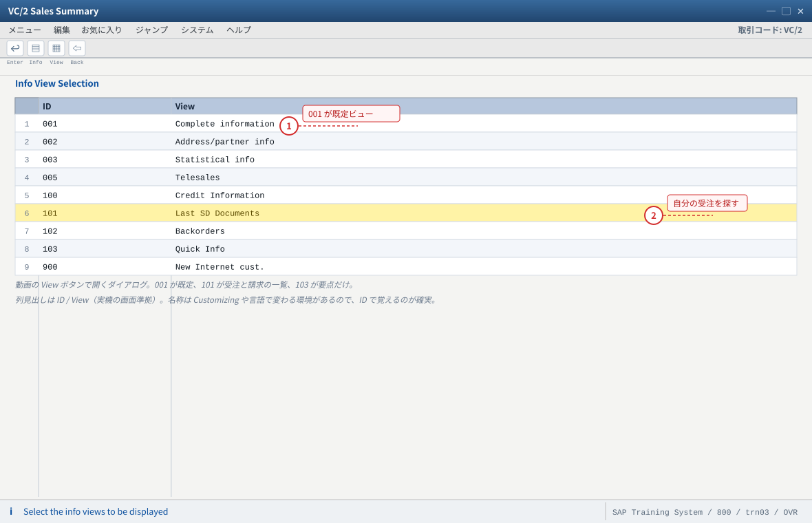
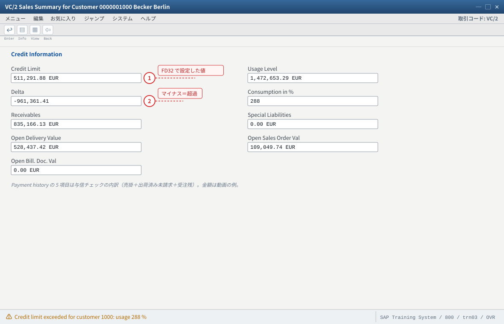
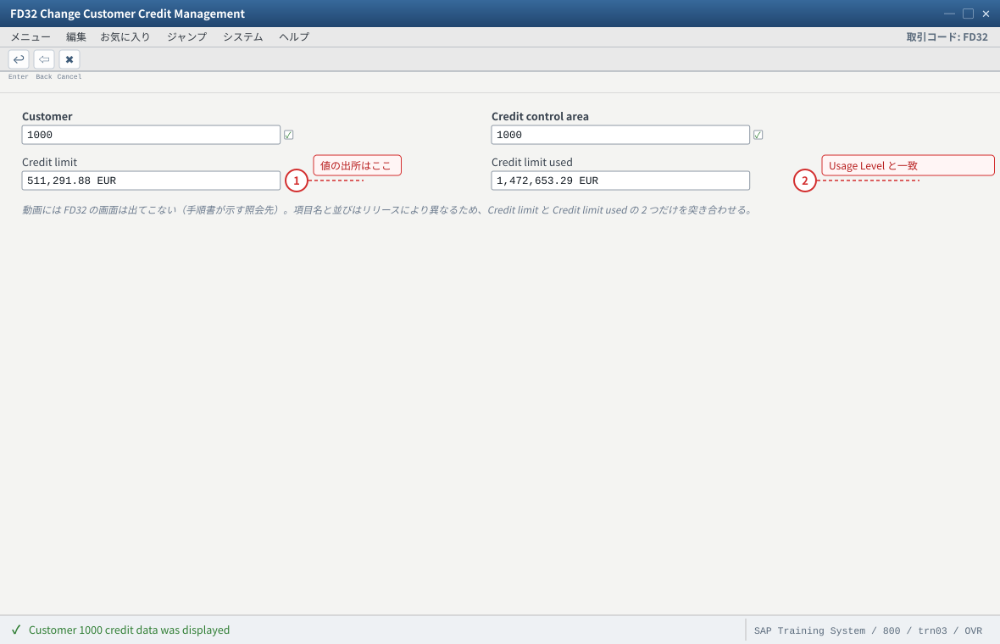
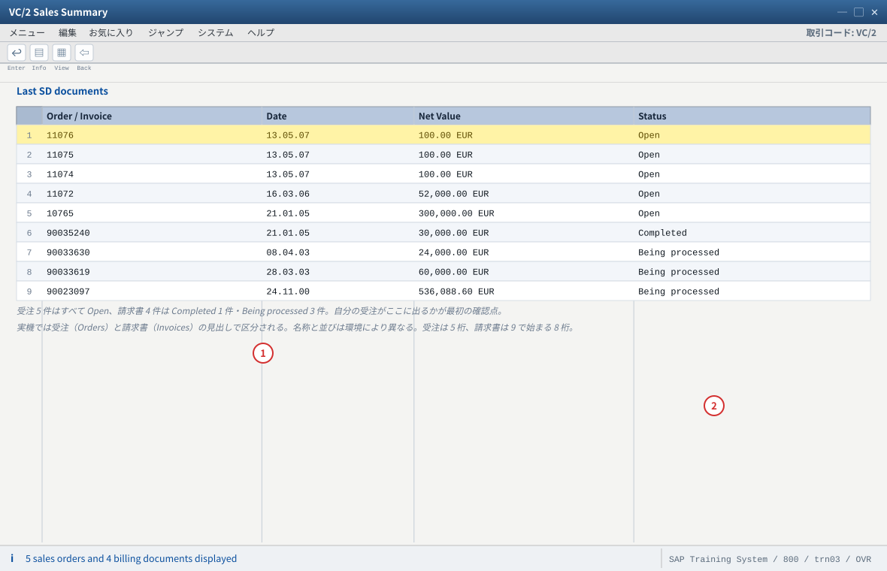
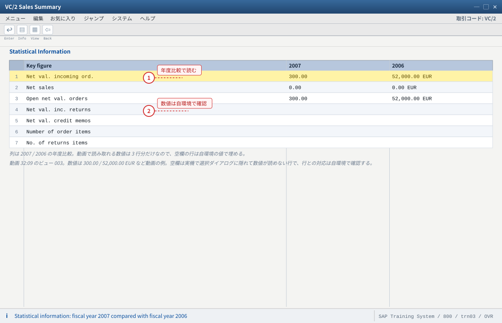
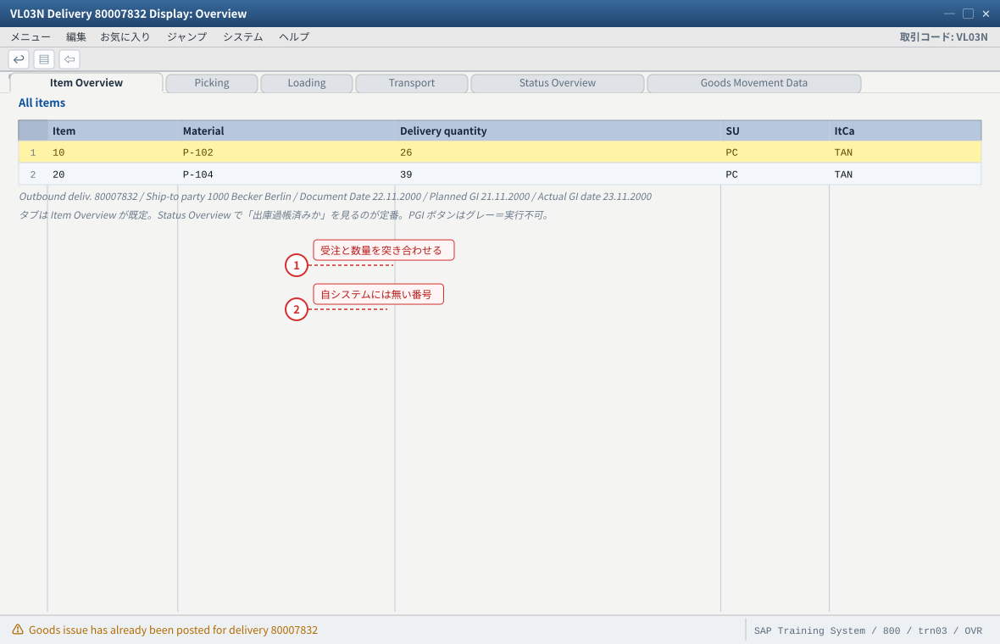
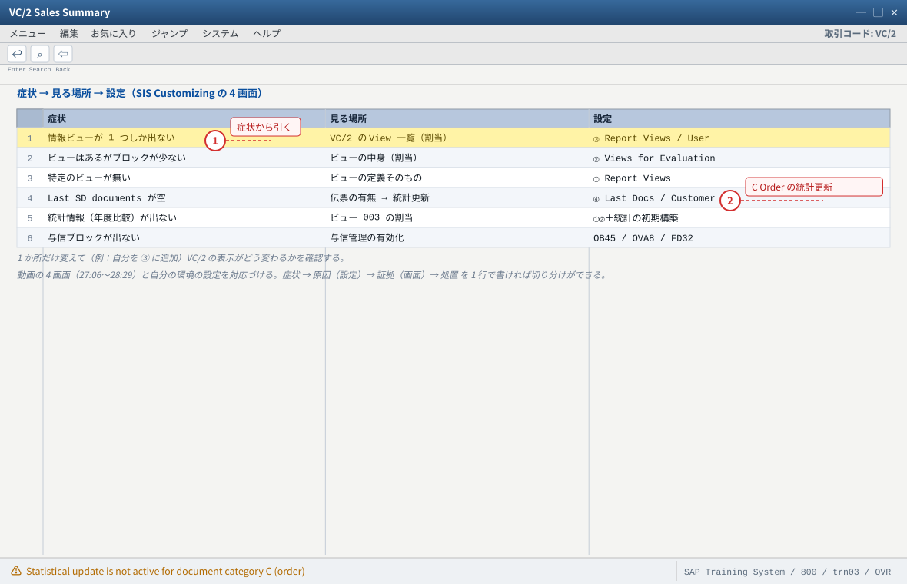

.png 放进 assets/gui/ 后执行 python3 tools/swap_gui_images.py <site> --apply 一键替换。练习③ 販売情報システム（VC/2 Sales Summary）
22:45〜32:29）の主题です。Sales Summary は得意先マスタの情報＋与信＋受注残＋既存伝票を1 画面に集めた照会機能で、受注の「環境」メニューからも開けます。① 初期画面と照会の作法 → ② 情報ビュー／情報ブロックの読み方 → ③ 与信情報 → ④ Last SD documents と統計情報 → ⑤ 出荷伝票へのドリルダウン（動画の
80007832）→ ⑥ 出ないときの切り分け（＝C5 の Customizing と結びつける）。VL03N）
3-6 出てこないときの切り分け（C5 との対応）
3-7 验收（完成基准）
3-1 初期画面と照会の作法（動画 29:48・31:15 付近）
入力値
トランザクション： VC/2（Sales Summary） 得意先： 1000（動画のデモ。概念スライドの例は 5264 = FA IDES） 販売エリア： 販売組織 1000（＋チャネル／部門は任意。絞ると対象が限定される） 到達経路（動画で示される 3 通り）： 1) コマンドフィールドに VC/2 を直接入力 2) SAP メニュー → Sales and Distribution → Sales Support → Information system → VC/2 3) 受注（VA01/VA02/VA03）の「環境（Environment）」メニューから Sales Summary
VC/2を起動し、初期（選択）画面の項目を確認する：Customer number（1000to）、Dynamic selections、Sales area（Sales organization1000など）。- 得意先
1000を入れて実行する。 - 動画と同じく受注から開く経路も試す：
VA03→ メニュー「Environment」→「Sales Summary」（ステータスバーのトランザクションがVA01のままでも開けることを確認）。 - 販売エリアで絞った場合と絞らない場合の結果の違いを見る（絞ると対象の伝票が限定される）。
1000 で結果画面が出る（動画と同じ Sales Summary for Customer 0000001000 Becker Berlin）。② 受注の環境メニューからも開ける（＝受注処理の道具として組み込まれている）。
③ メニューバーが「Program」から「Sales summary」に変わり、ツールバーに Info block／View ボタンが出ることを確認。
② 動画の
5264（FA IDES, Walldorf）はスライド用の例です。自分の得意先に読み替えてください。③ 権限エラーが出る →
VC/2 の実行権限（SIS 照会）を講師に確認。1000 について、3 通りの経路（直接入力・SAP メニュー・受注の環境メニュー）で Sales Summary を開き、同じ結果になるかを確認してください。
- 1 得意先 1000 は動画のデモ値（概念スライドの 5264 = FA IDES は例）。自分の得意先に読み替える
- 2 販売エリアで絞ると対象の伝票が限定される。まず絞らずに実行するのが切り分けの定石
自システムでの確認：コマンドフィールドに VC/2 ／ SAP メニュー → Sales and Distribution → Sales Support → Information system ／ 受注（VA03）の Environment メニュー「Sales Summary」の 3 通りを試す。実行後のタイトルは Sales Summary for Customer 0000001000 Becker Berlin。
3-2 情報ビュー（Info view）と情報ブロック（Info block）を読む（動画 31:50〜）
Sales Summary の画面は 情報ビュー（表示する組み合わせ）と、その中に入る 情報ブロック（個々のかたまり）の 2 階層です。 動画では「View」ボタンで情報ビューの一覧が出る場面が示されます。
| 情報ビュー（動画で確認できる ID） | 名称 | 用途の目安 |
|---|---|---|
001 | Complete information | 既定。住所・分類・主要指標・連絡先・与力・納入情報まで一通り |
002 | Address/partner info | 住所とパートナー情報だけ |
003 | Statistical info | 統計指標（受注金額・売上など） |
005 | Telesales | テレセールス向け |
100 | Credit Information | 与信限度・使用額・支払履歴 |
101 | Last SD Documents | 直近の受注・請求書の一覧（動画で最も実用的） |
102 | Backorders | 出荷遅延（バックオーダー） |
103 | Quick Info | 要点だけ（Last order・与信使用率・請求ブロック件数など） |
900 | New Internet cust. | 得意先固有のビュー（動画ではユーザ WF-SD-2 の既定ビュー） |
- 結果画面で「View」ボタンを押し、動画と同じ情報ビューの一覧が出ることを確認する。
- ビュー
001（Complete information）で表示される情報ブロックの見出しを上から書き出す（Address／Classification／Key figures／Contact person／Last SD documents／Document key figures／Pricing など）。 - ビュー
101（Last SD Documents）に切り替え、受注と請求書の一覧が出ることを確認する。 - ビュー
103（Quick Info）に切り替え、動画の概念スライドにあった Last order／Max. credit limit used／Orders blocked for billing に相当する情報が出るか確認する。 - 「Info block」ボタンでブロック単位の表示・非表示が切り替わることを確認する。
001／002／003／005／100／101／102／103／900）が「View」に出る。② ビューを切り替えると情報ブロックの構成が変わることを説明できる。
③ ビュー
101 で自分の练习①の受注が出る（出れば SIS の統計更新が生きている証拠）。001 しか出ない → 「Report Views for a User」に自分が割り当てられていない、または追加ビューが未定義（C5）。② ビューを選んでも中身が空 → 統計更新が OFF（文書カテゴリ
C Order。C5 の ④）。③ 情報ブロックの名称が動画と違う → Customizing で名称を変えている環境があります。ID で合わせるのが確実。
001・101・103 を順に表示し、表示される情報ブロックの違いを表にまとめてください。そのうえで「与信を見たいときはどのビューか」を自分の言葉で答えます。
- 1 001 が既定（Standard フラグ付き）。ここに並ぶのは Report Views に定義されたビューだけ（出なければ C5 ①/③）
- 2 101 が Last SD Documents。自分の练习受注が出るかを見る本命のビュー
自システムでの確認：001 しか出ないときは「Maintain the Report Views for a User」に自分が割り当てられているかを見る。ビューを選んでも中身が空なら統計更新（文書カテゴリ C Order）を疑う。
3-3 与信情報と Open 値の読み方（動画 25:25 付近）
動画のデモでは、得意先 1000 の与信関連の値が表示されます。読み方を押さえると、受注がブロックされる理由が分かります。
| 項目（動画の画面） | 動画の値 | 意味 |
|---|---|---|
| Credit Limit（与信限度額） | 511,291.88 EUR | その得意先に認められた与信の上限 |
| Usage Level（使用額） | 1,472,653.29 EUR | 売掛＋受注残＋出荷残などの合計（＝与信の消費） |
| Delta（差額） | -961,361.41 | マイナス＝限度超過。この状態では新規受注に与信ブロックが付き得ます |
| Consumption in % | 288 | 限度額に対する使用率。100 を超えると超過 |
| Receivables | 835,166.13 EUR | 未回収の売掛金 |
| Open Delivery Value | 528,437.42 EUR | 出荷済みだが未請求の金額 |
| Open Sales Order Val | 109,049.74 EUR | 受注残（まだ出荷していない受注） |
| Open Bill. Doc. Val | 0.00 EUR | 請求済みだが未転記などの金額 |
- ビュー
100（Credit Information）または結果画面の与信ブロックで、Credit Limit／Usage Level／Delta／Consumption in % を読み取る。 - 「自分の練習受注が Open Sales Order Val に入っているか」を確認する（入っていれば受注が与信に効いている証拠）。
FD32（得意先の与信）で与信限度額と与信区分を確認する（Sales Summary の値の出所）。- 受注で与信ブロックが付く場合は、
VA03のヘッダで与信ステータスを確認し、VKM1等の与信解除の入口を確認する（実行は不要）。 - Consumption in % が 100 を超えている得意先で新規受注を作ると何が起きるかを予想し、（可能なら）試す。
② Open Sales Order Val に自分の受注が反映されることを確認した（または反映されない理由を説明できる）。
③ Sales Summary の与信値と
FD32 の値が対応している。FD32／OB45／OVA8）。② 「ブロックされた」と「保存できない」を混同 → 与信は保存後のブロック、不完全性は保存時のエラー。症状の出るタイミングが違います。
FD32 を見比べ、「Delta がマイナスになる条件」を数式（Usege Level − Credit Limit）で説明し、自分の環境の得意先で実際の数値を確認してください。
- 1 Credit Limit は FD32 で設定した与信限度額。Sales Summary は照会なのでここでは変更できない
- 2 Usage Level − Credit Limit = Delta。マイナスは超過＝新しい受注に与信ブロックが付き得る状態
自システムでの確認：FD32 で Credit Limit / Credit limit used を突き合わせる。与信ブロックが出ないときは OVA8（与信管理の有効化）・OB45（与信管理領域）・得意先の与信区分を疑う（不完全性エラーは保存時に出るので症状のタイミングが違う）。

- 1 Credit limit が Sales Summary の Credit Limit の出所。値がずれるときは与信管理領域の取り違えを疑う
- 2 Credit limit used が Usage Level と対応する（売掛＋出荷残＋受注残の合計）
自システムでの確認：FD32 で得意先と与信管理領域を指定。与信管理の有効化は OVA8、与信管理領域の定義は OB45。与信ステータスの照会は VA03 のヘッダ、与信解除の入口は VKM1。
3-4 Last SD documents と統計情報（動画 31:53・32:07 付近）
ビュー 101（Last SD Documents）はその得意先の直近の受注と請求書を一覧します。動画では受注 5 件・請求書 4 件の例が示されます。
| 区分 | 動画の例 | 見るポイント |
|---|---|---|
| 受注（Order） | 11076 / 11075 / 11074（100.00 EUR・Open）／11072（52,000.00 EUR）／10765（300,000.00 EUR） | 番号・日付・正味価額・Status（Open など） |
| 請求書（Invoice） | 90035240（30,000.00 EUR・Completed）／90033630 / 90033619（Being processed）／90023097（536,088.60 EUR） | ステータス（Completed／Being processed）の違い |
統計情報（ビュー 003） | Net value of incoming orders／Net sales／Open net value of orders／Net value of inc. returns／Net value of credit memos／Number of order items／No. of returns items（2007 vs 2006 の比較） | 年度比較で見る。動画では 2007 が 300.00、2006 が 52,000.00 EUR の例 |
| Quick Info | Last order 5638・Max. credit limit used 68 %・Orders blocked for billing 2（概念スライドの例） | 「要点だけ」を見る癖を付けると日常業務で速い |
- ビュー
101を表示し、自分の练习受注が一覧に出るか確認する（無ければ次の手順で切り分け）。 - 受注番号をダブルクリック（または該当行を選択）して、受注の照会画面（
VA03）へ飛べるかを確認する。 - ビュー
003（Statistical info）に切り替え、年度比較の指標を読む。 - ビュー
103（Quick Info）で要点だけを確認する。 - （発展）請求を作成した後（练习④）に同じ画面を見て、Open Sales Order Val／Open Bill. Doc. Val がどう動くかを記録する。
101 に受注と請求書が分かれて並び、ステータスが読める。② 受注番号から伝票照会へドリルダウンできる。
③ 統計情報が年度（2 期）の比較で表示される。
C Order の統計更新が OFF（C5 ④）。② 出るが自分の受注が無い → 統計ファイルの更新タイミング（定期更新の環境では遅延します）、または販売エリアの絞り込み。
③ 動画とステータスの表記が違う → リリース・言語の違いです。「Open／Completed」の意味が読めれば十分。
101 の受注と請求書について、「番号の体系（先頭桁）が違う理由」と「ステータスが Open／Completed／Being processed に分かれる理由」を調べて書いてください（分からなければ講師に質問）。
- 1 受注は Status が Open。自分の练习① の受注がここに出れば SIS の統計更新は生きている
- 2 請求書は番号の体系が違う（8 桁・9 始まり）。Completed と Being processed は請求処理の進み具合
自システムでの確認：受注番号をダブルクリックすると VA03 の伝票照会へ飛べる（ドリルダウン）。空のときは「Last Documents for a Customer」で C Order の統計更新を確認する。

- 1 2007 と 2006 の 2 期比較。前年との差で受注と売上の傾向を読む（ビュー 003 の役割）
- 2 空欄は動画で数値が読めない行。自分の環境の統計データで埋めて、指標の定義を確認する
自システムでの確認：行の名称は動画の表記（Net value of incoming orders ／ Net sales ／ Open net value of orders ／ Net value of inc. returns ／ Net value of credit memos ／ Number of order items ／ No. of returns items）を図では短縮している。数値が出ないときはビュー 003 の割当（② Maintain Views for an Evaluation）と統計ファイルの更新を疑う（初期構築は講師に確認）。
3-5 出荷伝票へのドリルダウン（動画 25:24 の 80007832）
動画では、Sales Summary の “Last delivery” から出荷伝票の照会（VL03N）へ飛ぶ流れが示されます。
伝票番号は 80007832、明細は P-102（26 PC）・P-104（39 PC）、ItCa は TAN です。
| 出荷伝票の項目（動画） | 値 | 見るポイント |
|---|---|---|
| 出荷伝票番号 | 80007832 | 出荷伝票の採番（受注とは別体系） |
| Document Date | 22.11.2000 | 文書日付 |
| Ship-to party | 1000 Becker Berlin | 受注から引き継がれた住所 |
| 計画出庫 / 実出庫 | 21.11.2000 / 23.11.2000 | 計画と実績の差（遅延の見方） |
| タブ | Item Overview / Picking / Loading / Transport / Status Overview / Goods Movement Data | Status Overview で「出庫過帳済みか」を確認するのが実務の定番 |
| 明細 | 10 P-102 26 PC／20 P-104 39 PC（ItCa TAN） | 受注明細との対応（数量・品目） |
| ボタン | Post goods issue（グレー＝実行不可） | 既に出庫過帳済み、または権限が無い状態 |
VL03Nを起動し、出荷伝票番号（自分の環境のもの）を入れて照会する。動画と同じく Status Overview タブを確認する。- 受注から出荷伝票へ飛ぶ：
VA03→ 伝票フロー → 出荷伝票をダブルクリック。 - 出荷伝票から受注へ戻る：
VL03Nの伝票フローから受注を開く（双方向に辿れることを確認）。 - Sales Summary のLast delivery に相当する情報（出荷伝票）が、自分の環境ではどこから見られるかを探す。
VL03N で出荷伝票を照会し、Status Overview の意味（出庫過帳済みか）を説明できる。② 受注 ⇄ 出荷伝票を伝票フローで双方向に行き来できた。
③ 動画の画面（タブ構成・明細）と自分の環境の違いを指摘できる（リリース差）。
② 動画の
80007832 を入れても 自システムには存在しません（教育用データ）。自分の番号に読み替えてください。80007832 の情報を表に写し、自システムの出荷伝票と比較して「同じ項目・違う項目・自システムに無い項目」の 3 つに分類してください。
- 1 明細は受注からそのまま引き継がれる。数量が受注と違えばピッキングで差が出ている
- 2 番号 80007832 は動画の教育用データ。計画 21.11.2000 に対し実績 23.11.2000 の差が「遅延」の見方
自システムでの確認：自分の出荷伝票番号で VL03N を開き、Status Overview タブと PGI（Post goods issue）ボタンの活性／非活性を見る。実機の明細列は他に Description・Open quantity・Val. type がある（図では省略）。受注 ⇄ 出荷伝票は VA03 の伝票フローから双方向に辿れる（出荷伝票は练习④ で作る）。
3-6 出てこないときの切り分け（C5 の Customizing と結びつける）
動画は Sales Summary の Customizing（4 画面）を長く扱います。これは「レポートが出ない理由」を説明できるようにするためです。 症状から原因を引けるようにしましょう。
| 症状 | 最初に見る場所 | 設定（C5 の 4 画面） |
|---|---|---|
| 情報ビューが 1 つしか出ない | VC/2 の「View」一覧 → 自分が割り当てられているか | ③ Maintain the Report Views for a User |
| ビューはあるが情報ブロックが少ない | ビューの中身 | ② Maintain Views for an Evaluation |
| 特定のビューが存在しない | ビューの定義そのもの | ① Maintain Report Views |
| Last SD documents が空 | その得意先の伝票有無 → 統計更新 | ④ Last Documents for a Customer（C Order） |
| 統計情報（年度比較）が出ない | ビュー 003 の割当と統計ファイル | ①②＋統計の初期構築（講師に確認） |
| 与信ブロックが出ない | 与信管理の有効化と得意先の与信区分 | C5 ではなく OB45／OVA8／FD32 |
- 症状を 1 つ選び、上の表の「最初に見る場所」を実際に開く。
- 該当する Customizing（C5 の 4 画面）で現在の設定値を記録する（例：ユーザ割当が無い、
C Orderの統計更新が OFF）。 - 1 か所だけ変えて（例：自分を「Report Views for a User」に追加）、
VC/2の表示がどう変わったかを確認する。 - 「症状 → 原因（設定）→ 証拠（画面）→ 処置」を 1 行にまとめる。
27:06〜28:29）と自分の環境の設定を対応づけられれば合格です。
- 1 まず症状を特定する。症状が決まれば疑う画面が 1 つに絞られる（＝切り分けの型）
- 2 「Last SD documents が空」の最頻出原因は C Order の統計更新 OFF。④ の画面で確認する
自システムでの確認：SPRO → Sales and Distribution → Sales Support → Information System 配下の 4 画面。設定欄は正式名を短縮した（① Maintain Report Views ／ ② Maintain Views for an Evaluation ／ ③ Maintain the Report Views for a User ／ ④ Last Documents for a Customer）。与信は OB45・OVA8・FD32。
3-7 验收（完成基准）
VC/2を得意先1000で実行し、Sales Summary を表示できた- 受注の環境メニューからも Sales Summary を開けることを確認した
- 情報ビュー（
001／101／103など）を切り替え、情報ブロックの違いを説明できる - ビュー
101（Last SD Documents）で自分の受注を確認した - 与信ブロック（Credit Limit／Usage Level／Delta／Consumption %）を読み、Delta マイナスの意味を説明できる
FD32と突き合わせて、与信値の出所を確認した- ビュー
003の年度比較の指標を読んだ VL03Nで出荷伝票を照会し、Status Overview の意味を説明できる- 伝票フローで受注 → 出荷 → 請求を行き来できた（受注と出荷の双方向）
- 症状から原因を引く表（情報ビューが出ない／Last SD documents が空 など）を使い、実際に 1 件切り分けた
- つまずいた点を「症状 → 根因 → 証拠 → 処置 → 再発防止」で 1 件以上記録した